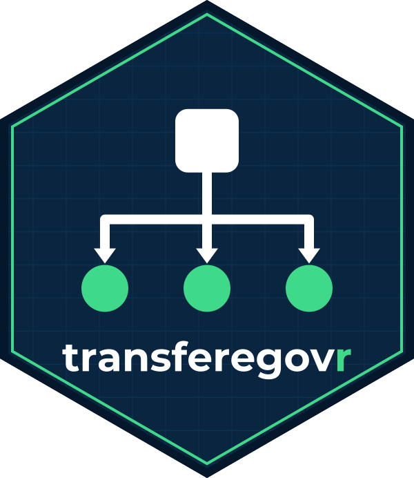

Putting the tables back together
Source:vignettes/joining-tables.Rmd
joining-tables.RmdEach module is a normalized database served one table at a time. Almost nothing useful is answerable from a single table: the money is in one, who received it in another, and what it was spent on in a third. This vignette maps how they fit together.
The APIs do not declare their keys
The OpenAPI documents these services publish describe columns and
query parameters, and nothing else — no primary keys, no foreign keys.
tg_fields() therefore cannot tell you what joins to
what.
The relationships below come from the data models the government
publishes alongside the APIs, at https://www.gov.br/transferegov/pt-br/ferramentas-gestao/dados-abertos.
The convention is regular enough to follow without them: a column named
id_x in table B refers to the row of table X whose own
id_x matches.
especiais
Everything hangs off the action plan,
planos_acao_especiais.
programas_especiais ──< planos_acao_especiais >── beneficiarios_especiais
│
├──< planos_trabalho_especiais
│ ├──< planos_trabalho_analises_especiais
│ │ └──< plano_trabalho_analise_historico_especiais
│ ├──< planos_trabalho_historico
│ └──< orgaos_analises_pendentes_especiais
├──< executores_especiais
│ ├──< meta_especiais
│ └──< finalidade_especiais
├──< empenhos_especiais
│ └──< documentos_habeis_especiais
│ └──< ordens_pagamentos_ordens_bancarias_especiais
├──< planos_acao_historico_especiais
├──< relatorios_gestao_especiais
├──< devolucao_especiais
└──< relatorios_gestao_novos_especiais
├──< relatorios_gestao_analise_especiais
└──< relatorios_gestao_documento_liquidacao_especiais
saldo_conta_gestao_financeira_especiais ──< gestao_financeira_lancamentos_especiais
└──< gestao_financeira_subtransacoes_especiaisThe join columns are the obvious ones: id_plano_acao,
id_plano_trabalho, id_executor,
id_empenho, id_dh,
id_beneficiario, id_programa,
id_agencia_conta,
id_lancamento_gestao_financeira,
id_relatorio_gestao_novo.
The three tables published in September 2026 — returned funds and the
two report tables under relatorios_gestao_novos_especiais —
are not in the government’s data model yet. Their links above were
checked against the data instead: every sampled identifier found its
parent.
The goals and the public-policy area hang off the executor rather
than off the plan: meta_especiais and
finalidade_especiais both key on
id_executor.
Note where the beneficiary lives. The action plan carries only
id_beneficiario; the name, CNPJ and state are in
beneficiarios_especiais. There is no way to filter action
plans by state directly — you filter the beneficiaries and join:
beneficiarios <- tg_get("especiais", "beneficiarios_especiais", .limit = Inf)
pernambuco <- beneficiarios |>
filter(uf_beneficiario == "PE")
planos <- tg_get("especiais", "planos_acao_especiais", .limit = Inf) |>
semi_join(pernambuco, by = "id_beneficiario")beneficiarios_especiais has five columns and is small
enough to take whole, which makes this cheaper than it looks.
fundoafundo
Same shape, with the program at the top.
programas ──< planos_acao
├──< programas_beneficiarios │
└──< programas_gestao_agil ├──< planos_acao_metas
│ └──< planos_acao_metas_acoes
├──< planos_acao_dados_bancarios
├──< planos_acao_destinacao_recursos
├──< planos_acao_historico
│ └──< planos_acao_analises
│ └──< planos_acao_analises_responsaveis
├──< termos_adesao
│ └──< termos_adesao_historico
├──< empenhos
└──< relatorios_gestao
├──< relatorios_gestao_acoes
└──< relatorios_gestao_analises
└──< relatorios_gestao_analises_responsaveis
gestao_financeira_lancamentos ──< gestao_financeira_subtransacoesHere the action plan does carry the state, so a filter does the work the join would:
planos <- tg_get(
"fundoafundo", "planos_acao",
uf_ente_recebedor_plano_acao = "PE",
.limit = Inf
)relatorios_gestao_acoes joins two ways — to its report
through id_relatorio_gestao and to the plan’s action
through id_acao_meta_plano_acao — which is what lets you
tie what was reported to what was planned.
parcerias
The chain here is the longest, and it is the one worth following end to end: it runs from the program that announces money to the bank statement of the account it leaves from.
programa ──< proposta ──< parceria ──< parceria_conta ──< extrato_bancario
│ │ │
│ │ └──< documento_habil ──< ordem_pagamento
│ │ └──< empenho_parceria
│ ├──< meta_proposta
│ ├──< item_proposta
│ ├──< cronograma_desembolso
│ ├──< distribuicao_recurso_proposta
│ ├──< proposta_resultado_indicador
│ └──< analise_proposta
└──< beneficiario_emenda_parlamentar
└──< indicacao_beneficiario_emenda_parlamentarOne link changes name on the way:
indicacao_beneficiario_emenda_parlamentar refers to its
parent through id_beneficiario_emenda_parlamentar, which
the parent calls
id_beneficiario_emenda_parlamentar_programa. The same
nominations also arrive nested in the parent, as
indicacoes_beneficiario.
opp holds payment orders issued from a partnership’s
bank account — Pix transfers, tax payments, bills — with the payee, the
amount and whether it went through. It is new and small: 137 rows
between May and September 2026, 21 of them described as tests
("teste boleto", "teste Pix cpf"), so filter
those out before adding anything up. It hangs off the bank account, but
not by the account’s own key: it carries id_conta_gf, which
matches the column of the same name in parceria_conta, not
id_parceria_conta. The difference matters because the wrong
join half-works: checked against the whole of
parceria_conta, all of opp’s accounts match on
id_conta_gf, one row each, while two of the three also
coincide numerically with some unrelated id_parceria_conta.
opp is in no published data model yet, so the data is the
only evidence.
parceria_conta ──< opp (on id_conta_gf)Following it:
propostas <- tg_get(
"parcerias", "proposta",
sg_uf_recebedor = "PE", situacao_proposta = "Aprovada",
.limit = Inf
)
parcerias <- tg_get("parcerias", "parceria", .limit = Inf) |>
semi_join(propostas, by = "id_proposta")
contas <- tg_get("parcerias", "parceria_conta", .limit = Inf) |>
semi_join(parcerias, by = "id_parceria")extrato_bancario holds 1.4 million rows, so join into it
rather than collecting it whole — filter by the accounts you care about.
id_parceria_conta takes up to 200 of them per request, so
send them in groups:
library(purrr)
grupos <- split(contas$id_parceria_conta,
ceiling(seq_along(contas$id_parceria_conta) / 200))
extratos <- list_rbind(map(grupos, function(ids) {
tg_get("parcerias", "extrato_bancario", id_parceria_conta = ids, .limit = Inf)
}))tg_params() says which identifiers take a list, and how
many values each accepts, in its multiple and
max_values columns.
ted
Decentralized credit hangs off the action plan too, and the action plan off the program. Every link below is declared in the government’s data model, and each was also checked against the data: of 200 identifiers sampled per link, every one found exactly one parent row.
programas ──< planos_acao ──< termos_execucao
│ │
│ ├──< notas_credito ──< eventos
│ ├──< programacoes_financeiras ──< programacoes_financeiras_trf
│ ├──< planos_acao_metas ──< planos_acao_metas_etapas
│ ├──< planos_trabalho_cronogramas
│ ├──< planos_acao_analises
│ └──< planos_acao_pareceres
├──< programas_acoes_orcamentarias
└──< programas_beneficiariosThe join columns are id_programa,
id_plano_acao, id_nota,
id_programacao and id_meta, each under the
same name on both sides.
The identifiers here all take lists, so following the money from a set of plans to the budget events of their credit notes is two requests per 200 plans rather than one per plan:
Children that arrive already joined
Several child tables have no endpoint. The API folds them into the parent as an array, which means the join is already done and you only have to unnest.
In parcerias:
| Nested column | Parent | What it holds |
|---|---|---|
ufs_habilitadas |
programa |
States the program is open to |
programa_atende_a |
programa |
Who the program serves |
categorias_despesa |
programa |
Permitted expense categories |
resultados_esperados |
programa |
Expected results |
indicadores_programa |
programa |
Indicators |
intervenientes_proposta |
proposta |
Intervening parties |
categorias_despesa_proposta |
proposta |
Expense categories used |
etapas_proposta |
meta_proposta |
Stages of a goal |
publicacoes_parceria |
parceria |
Official gazette publications |
classificacoes_ingresso |
parceria_conta |
Classified receipts |
tipos_analise |
analise_proposta |
Kinds of review |
indicacoes_beneficiario |
beneficiario_emenda_parlamentar |
Nominations |
classificacao_despesa |
item_proposta |
Expense classification |
In fundoafundo: programa_acao_orcamentaria
and programa_natureza_despesa on programas,
categorias_despesa_lancamento on
gestao_financeira_lancamentos,
categorias_despesa_subtransacao on
gestao_financeira_subtransacoes, and
saldo_final_dado_bancario on
planos_acao_dados_bancarios.
In ted: esfera_orcamentaria_evento and
natureza_despesa_evento on eventos, and
formalizacao_termo_execucao and
link_termo_execucao on termos_execucao.
especiais has none: all twenty-three of its tables have
endpoints.
To flatten one:
library(tidyr)
programas <- tg_get("parcerias", "programa", .limit = Inf)
programas |>
select(id_programa, ufs_habilitadas) |>
unnest_longer(ufs_habilitadas) |>
unnest_wider(ufs_habilitadas)
#> # A tibble: … × 4
#> id_programa nm_uf sg_uf cd_ibge
#> <dbl> <chr> <chr> <dbl>
#> 1 7 MINAS GERAIS MG 31
#> …tg_fields(nested = ) tells you the shape before you
unnest:
tg_fields("parcerias", "programa", nested = "ufs_habilitadas")Note that an empty array is an empty list, not NA, so
unnest_longer() drops those rows unless you ask it to keep
them with keep_empty = TRUE.
Joins that do not fully resolve
Not every identifier finds its parent. Government systems have rows that predate a constraint, and rows whose parent has since been removed. Check rather than assume:
planos <- tg_get("especiais", "planos_acao_especiais", .limit = 500)
beneficiarios <- tg_get("especiais", "beneficiarios_especiais", .limit = Inf)
sum(!planos$id_beneficiario %in% beneficiarios$id_beneficiario)An inner_join() would drop those rows silently. Use
left_join() and count the NAs, or
anti_join() to see what did not match, so a gap upstream
shows up as a number rather than as a quietly smaller answer.
Repeated identifiers are not always a bug
Some endpoints are views with a join already baked in, so an identifier can appear on more than one row. That is real data, not a pagination fault — it can be told apart by fetching a single page and checking whether the repeat is already there:
one_page <- tg_get("fundoafundo", "programas", .limit = 200)
nrow(one_page)
length(unique(one_page$id_programa))If the two differ within one request, no amount of pagination caused it.